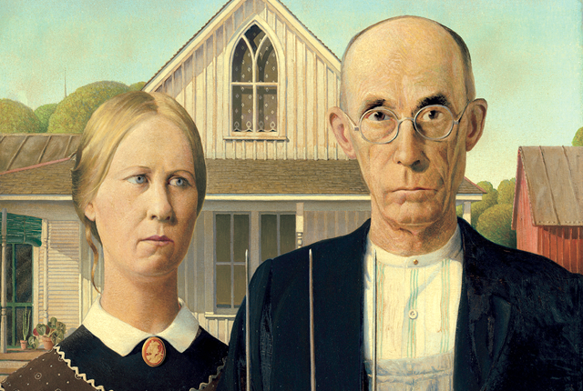

Why Amoré?
Well, I'll tell you why. It all started in the library. We thought it would be funny to make a pointless website, but also bring people together at the same time. That last part was made up. This website is gonna look much cooler when it's done. I hope so at least.